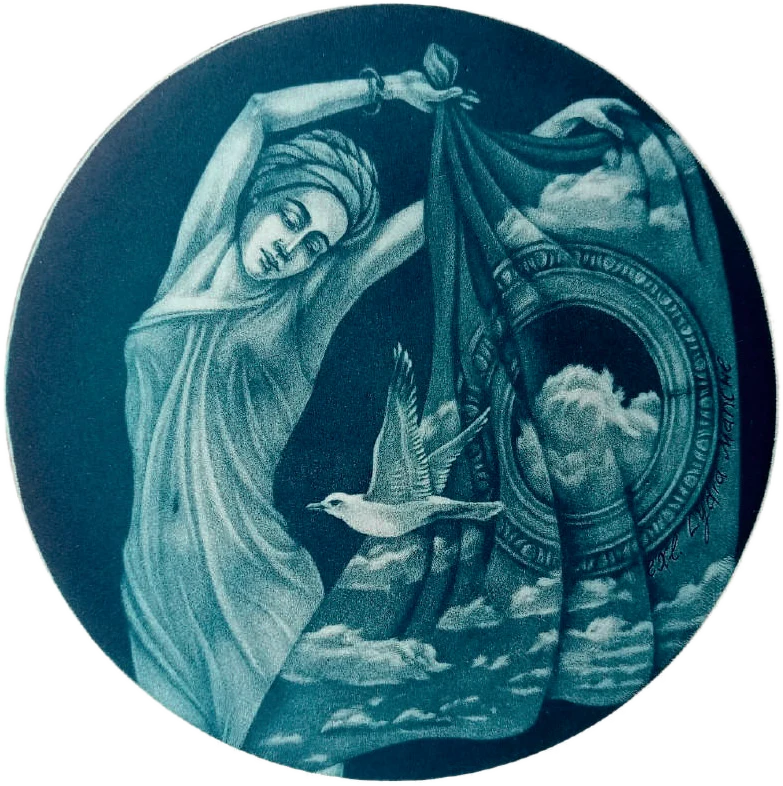

Contact
For exhibitions, acquisitions, commissions and ex libris, please write.
marinamaroz2018@gmail.com- @marozmarina
- Studio
- Minsk, Belarus

© 2026 Marina Maroz · All images © the artist
Contact
For exhibitions, acquisitions, commissions and ex libris, please write.
marinamaroz2018@gmail.com
© 2026 Marina Maroz · All images © the artist